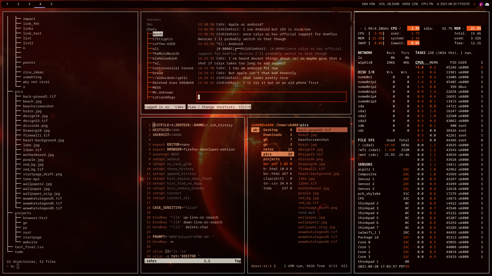 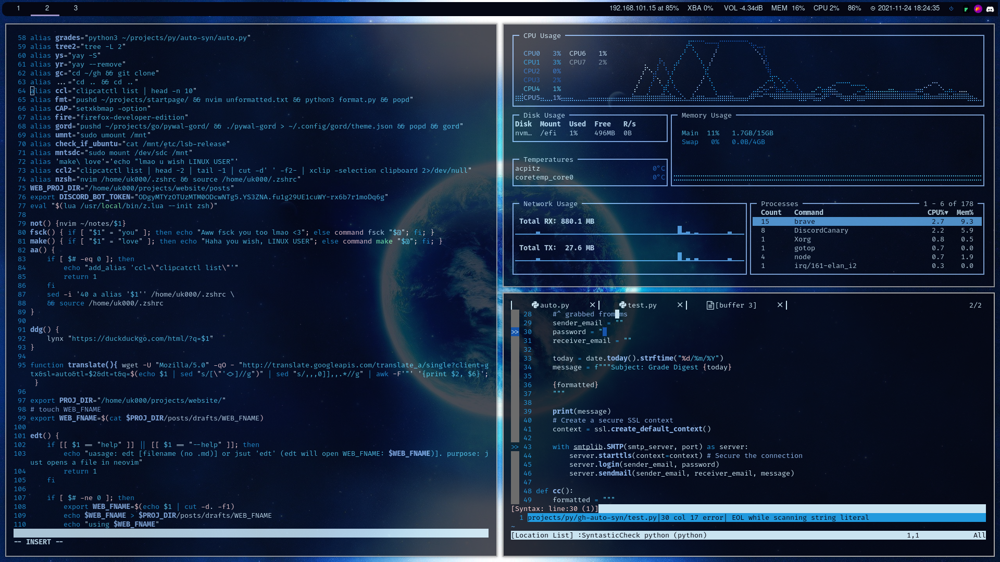 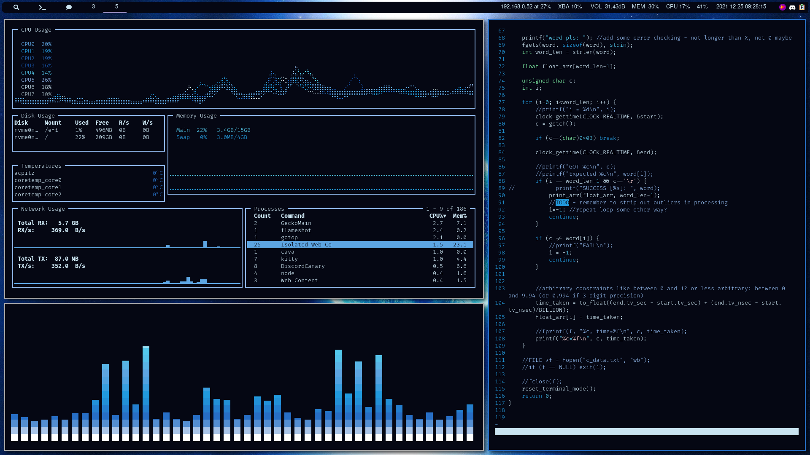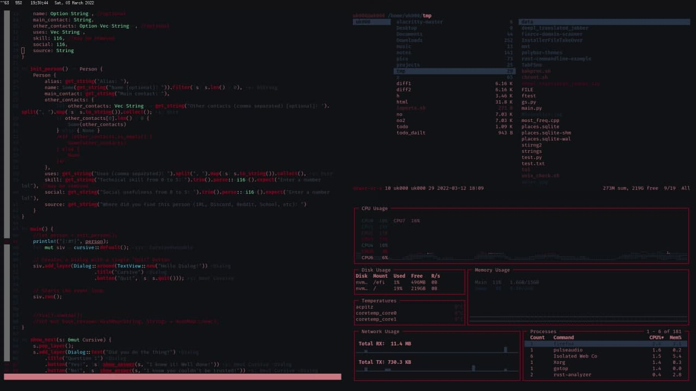
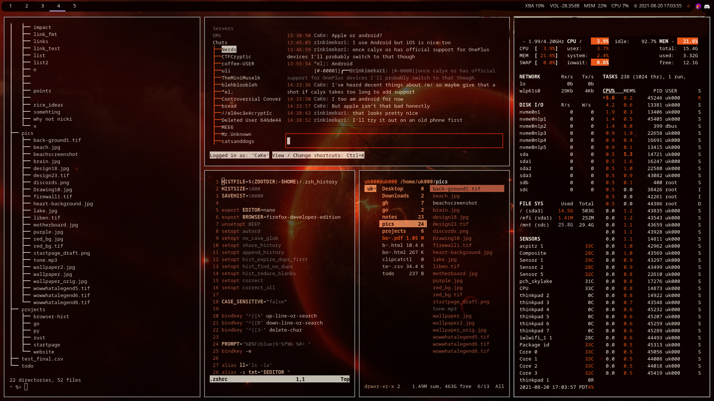 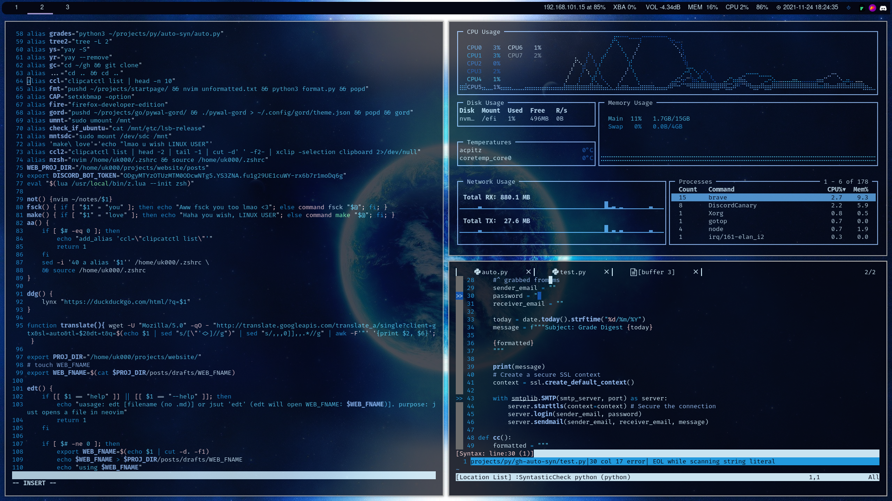 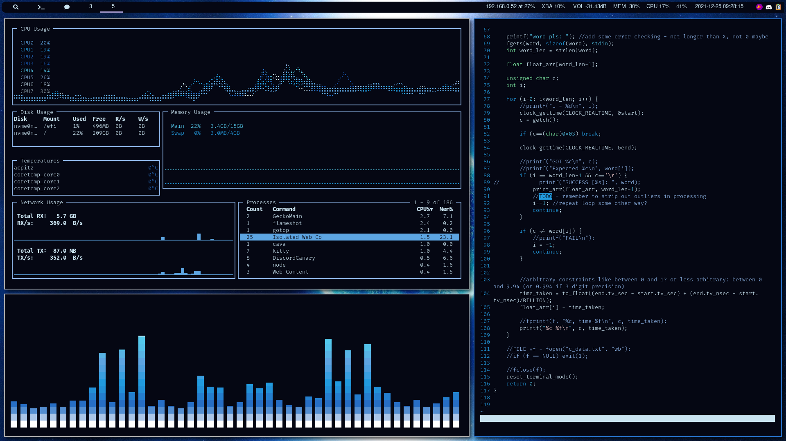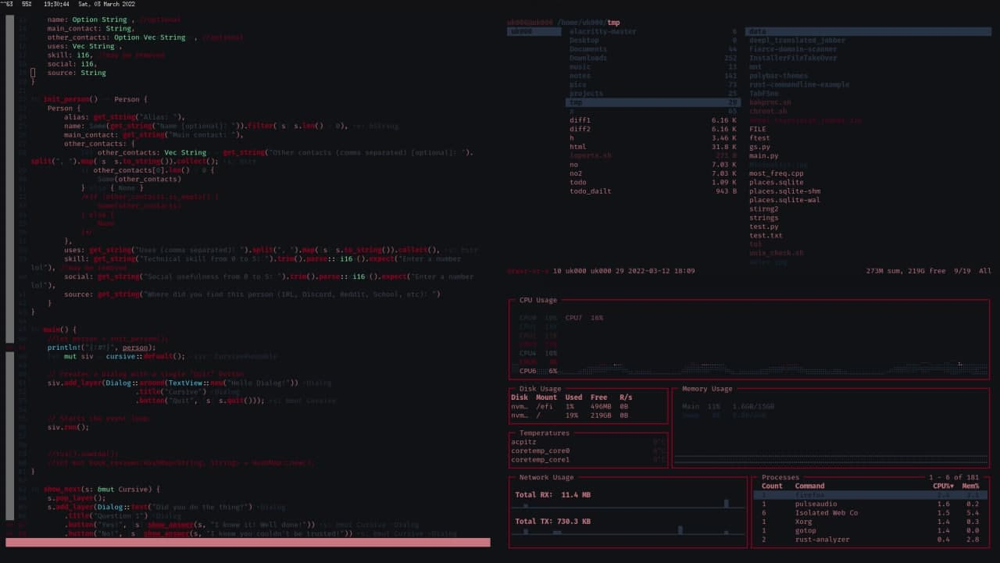Ricing is defined as
Increasing the perceived performance of something through cosmetics
It’s a rather large subculture and people enjoy showing off their creations in places such as r/unixporn
Here are my attempts at ricing (live page, subject to updates as I improve)
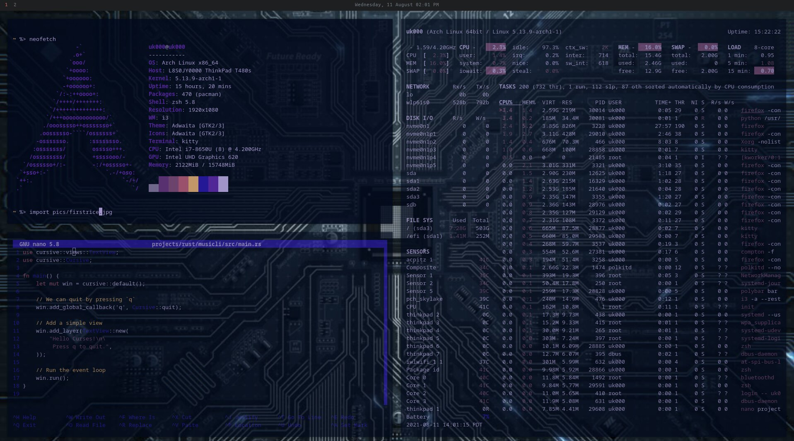 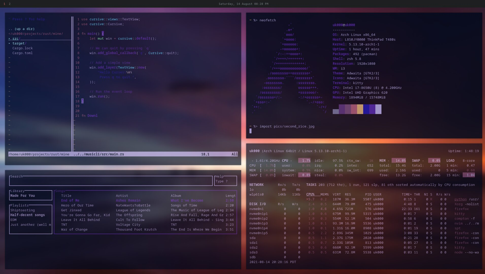 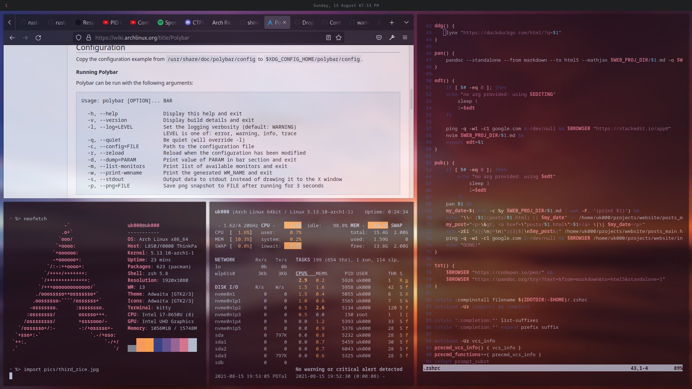 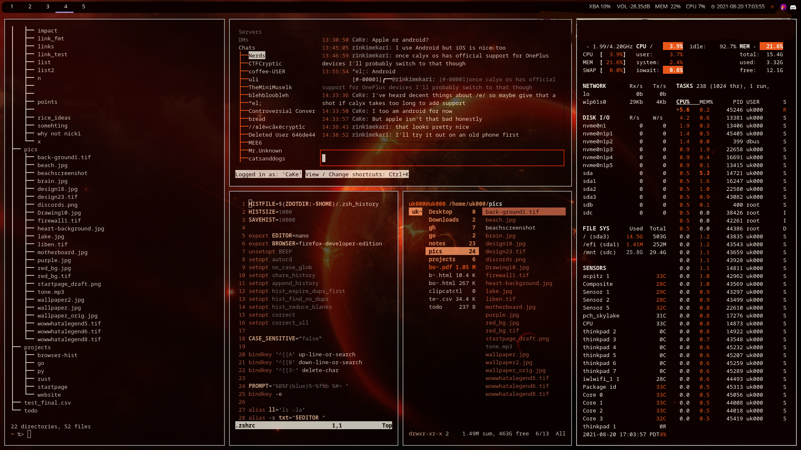 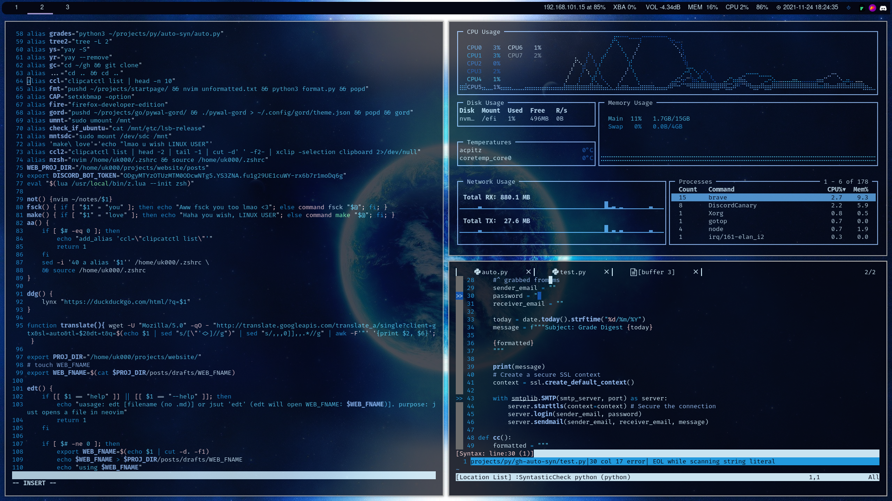 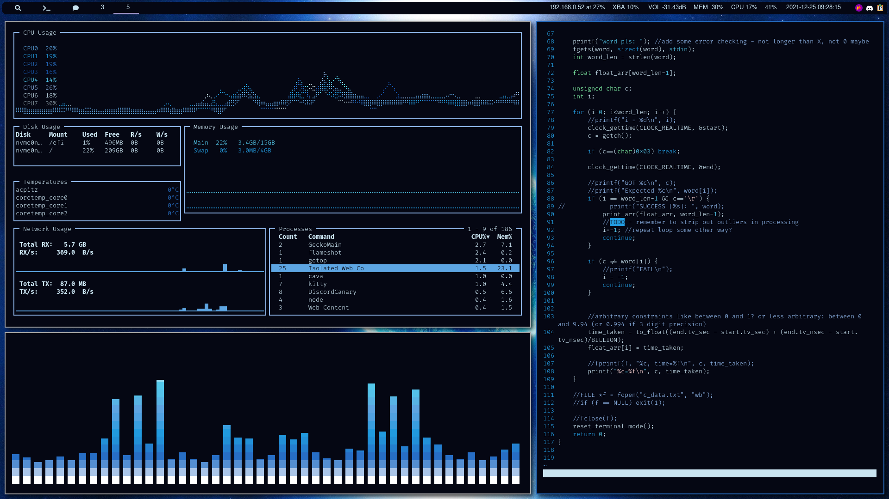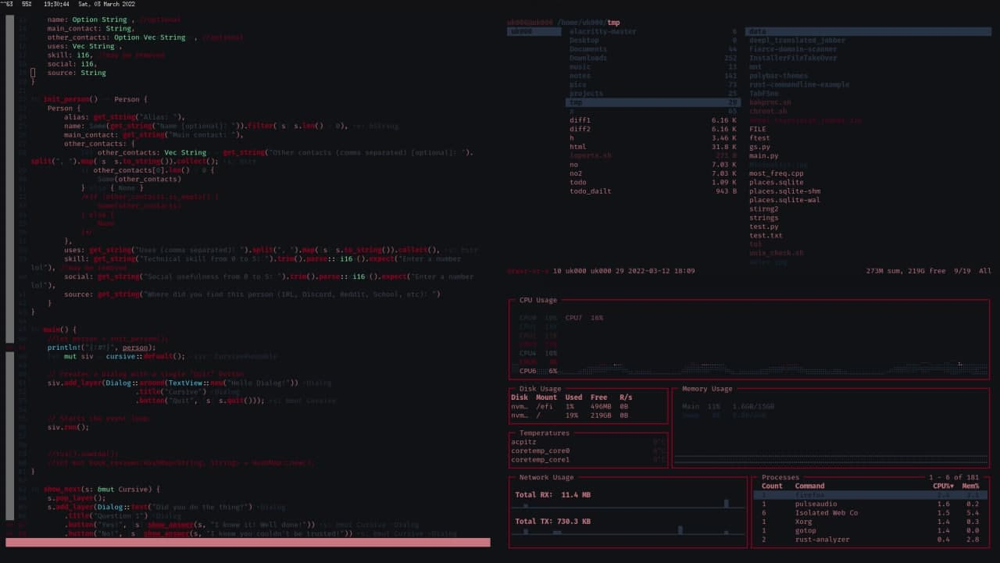